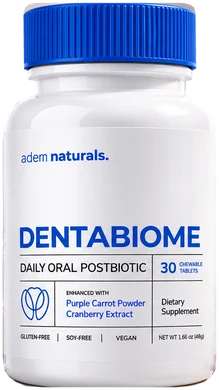

Carrots weren't always orange
Purple carrots are an old variety. Their deep violet color comes from anthocyanins, the same family of water-soluble pigments that colors blueberries, red cabbage and black rice.
What anthocyanins are
Anthocyanins are flavonoids, a broad group of plant compounds studied for their antioxidant properties. In plants, they help protect tissues from light stress. In foods, they're the reason "eat the rainbow" advice includes purple produce.
Why it's in DentaBiome
Purple carrot powder is one of the two featured ingredients on the DentaBiome label, next to cranberry extract. The seller includes it as a plant-derived component. It also fits the product's clean, plant-forward label, which is marked vegan, gluten-free and soy-free.
Getting more purple foods
- Roast purple carrots with olive oil and herbs
- Add red cabbage to slaws and salads
- Top yogurt or oatmeal with berries
- Try black rice in grain bowls
See every ingredient on the product overview, or read about cranberry in oral care.

About DentaBiome
A daily Berry Frost oral postbiotic chewable with xylitol, cranberry and purple carrot. 30 per bottle, 60-day guarantee.